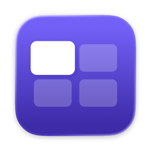
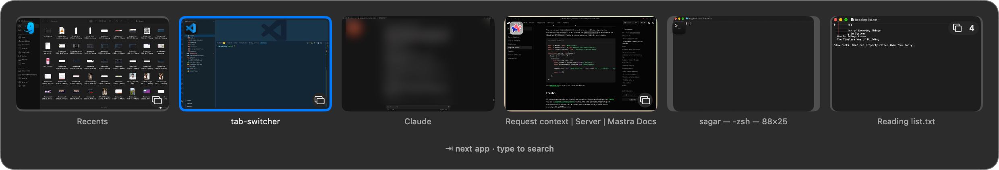
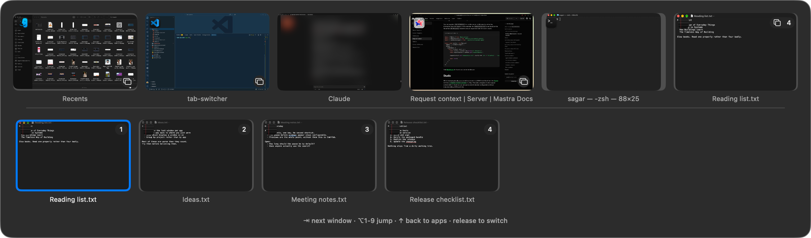
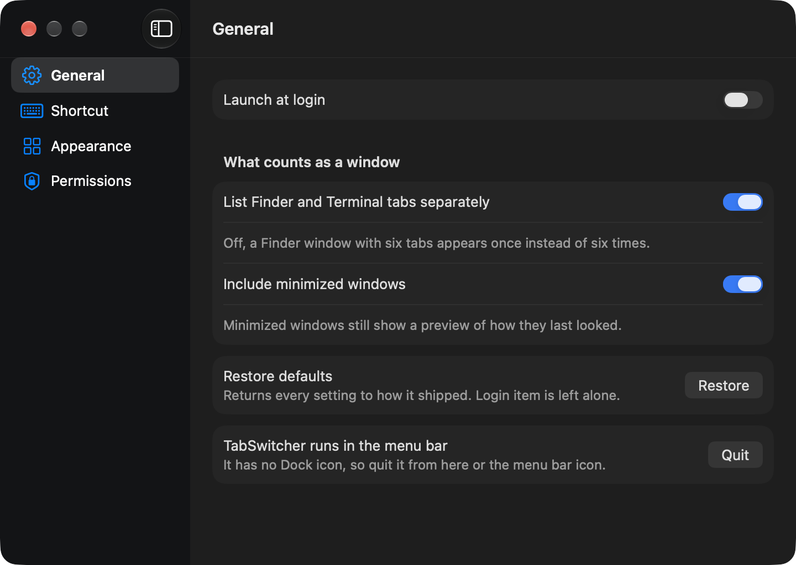

A window switcher for macOS, with previews. ⌥Tab cycles apps — rest on one and its windows appear beneath.

⌘Tab shows icons, not windows. With five VS Code windows open it offers one entry and no way to say which. TabSwitcher shows what each window actually contains, and reaches individual windows of the same app without leaving the keyboard.

Pause on an app with more than one window and its windows unfold underneath. Keep tapping Tab and you are moving through those. Move quickly and it behaves exactly like ⌘Tab, so it never slows down the switch you already knew how to make.
| ⌥Tab | next app |
| ⌥⇧Tab | previous app |
| hold on an app with several windows | after a moment, its windows appear below |
| ⌥Tab again, once they have | steps through those windows |
| ⌥1–9 | jump straight to a window |
| type anything | filter every window by name |
| release ⌥ | switch |
The pause before windows appear is configurable, including “never” and “immediately”.
This app is not notarized. It has no paid Apple Developer ID, which means a browser download is blocked outright by Gatekeeper, and Homebrew is not available.
The script below avoids that legitimately rather than by a trick: the quarantine flag
is applied by the downloading application, and curl does not apply
one. Nothing is bypassed.
This is the form to prefer.
curl -fsSL https://raw.githubusercontent.com/sagarnanera/tab-switcher/main/Scripts/install.sh -o install.sh
less install.sh
bash install.shcurl -fsSL https://raw.githubusercontent.com/sagarnanera/tab-switcher/main/Scripts/install.sh | bashPiping a remote script into a shell runs whatever that URL serves at that moment. Homebrew and rustup make it normal, not safe — and it is worth being deliberate about here, because this app asks for permission to read your screen.
git clone https://github.com/sagarnanera/tab-switcher
cd tab-switcher
bash Scripts/setup.sh
bash Scripts/build.shAccessibility — to raise a window. macOS has no public way to bring one specific window of an app forward; it goes through the accessibility API.
Screen Recording — for the previews. macOS treats reading another app's window pixels as screen recording, whatever the purpose. Without it you get app icons instead of thumbnails.
Neither sends anything anywhere. There is no network code in this app at all — no telemetry, no crash reporting, no update check. What degrades without each →

The shortcut, the length of the pause, preview size, what counts as a window, and whether the key hints are shown at all.
It does not switch browser tabs. A background tab has no capturable pixels by any mechanism — not ScreenCaptureKit, not accessibility, not even a browser extension.
Nothing tells you when a new version exists. There is no updater — it would have meant disabling a macOS security check, which is a poor trade for an app holding Screen Recording. Re-run the install command to update; it replaces the app in place and keeps your permissions.
It uses seven undocumented macOS calls, each resolved at runtime with a public fallback, to raise specific windows and capture minimized ones. If one disappears in a macOS update the app loses that capability and keeps running. Every one of them, listed →